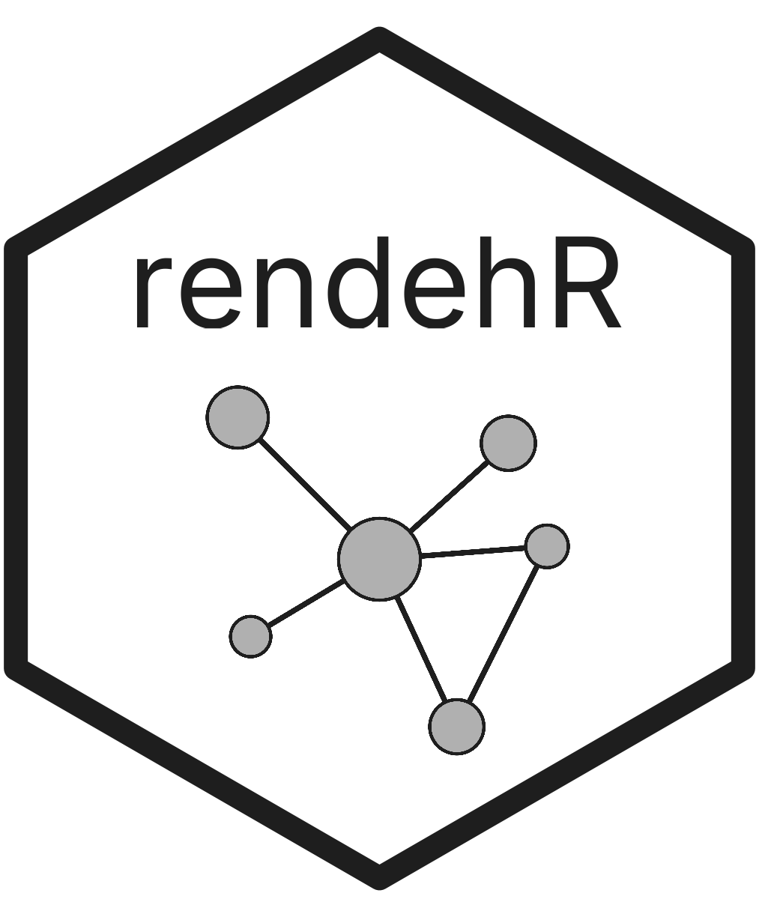

Browse all EHR database tables with flexible access
Source:R/access_core.R
browse_ehr_db_flex.RdExperimental flexible browser. Returns lazy database tables either nested by
source and layer, flattened by schema.table, or both. No rows are loaded
until the user calls collect() or similar.
Arguments
- con
Optional explicit DBI connection. If NULL, opens a connection using
db_name, the active/default project config, and credentials.- db_name
Optional Postgres database name. If NULL, uses the active project config, then the default config file, then "rendehr".
- config_path
Optional project config path. If NULL and no config is active, uses
EHR_CONFIGorconfig/ehr_config.jsonwhen present.- include_system
Include PostgreSQL system schemas? Default FALSE.
- table_type
Object types to include:
"both"(default) includes base tables and views,"base"includes only base tables, and"view"includes only views.- view
Return shape:
"source"returns a source/layer/table nested list,"flattened"returns one list named byschema.table, and"both"returns both assourcesandflattened.
Examples
if (FALSE) { # \dontrun{
db <- browse_ehr_db_flex(config_path = "config/ehr_config.json")
db$mimic_iv_demo$harmonized$ts_tab
db$eicu_demo$concepts$heart_rate
db$merged$rendehr$ts # merge targets grouped under `merged`
db2 <- browse_ehr_db_flex(view = "flattened")
db2[["mimic_iv_demo_coh_harmonized.ts_tab"]]
disconnect_ehr_db(db)
disconnect_ehr_db(db2)
} # }